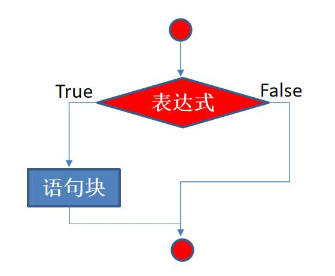
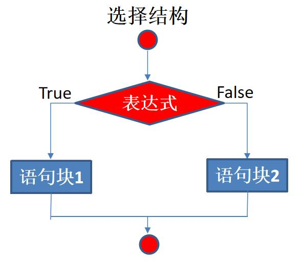
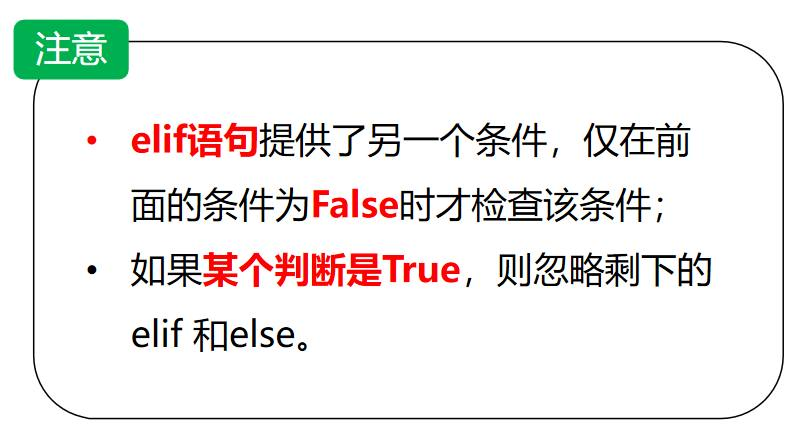
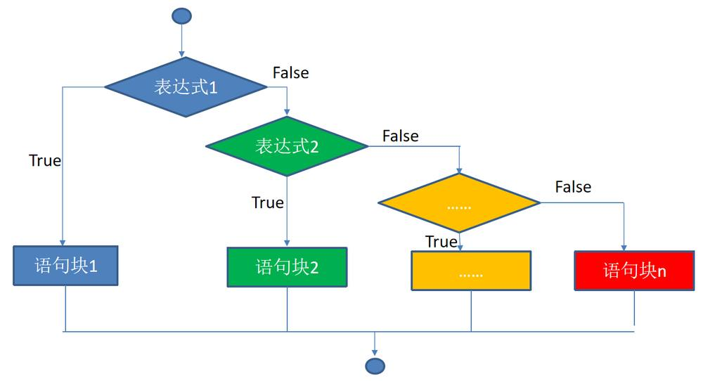
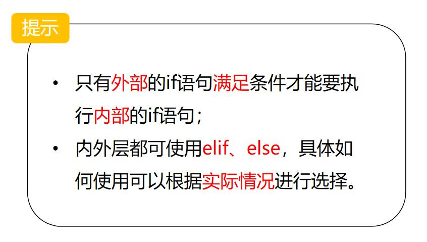
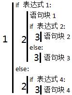

第 1 页 · 4.2.1 单分支选择结构
4.2.1 单分支选择结构
x = input('Input two number:')
a, b = map(int, x.split())
if a > b:
a, b = b, a #序列解包，交换两个变量的值
print(a, b)

语法格式：
If 表达式（条件）：
语句块（如果条件为真，执行语句块。否则，执行下一段代码）
第 2 页 · 4.2.2 双分支选择结构
4.2.2 双分支选择结构
>>> chTest = ['1', '2', '3', '4', '5']
>>> if chTest:
print(chTest)
else:
print('Empty')
['1', '2', '3', '4', '5']
语法格式：
if 表达式（条件）:
满足条件时，做事情A
else:
不满足条件时，做事情B

第 3 页 · 4.2.2 双分支选择结构
4.2.2 双分支选择结构
Python对于双分支结构还支持如下形式的表达式：
value1 if condition else value2
当条件表达式condition的值与True等价时，表达式的值为value1，否则表达式的值为value2。在value1和value2中还可以使用复杂表达式，包括函数调用和基本输出语句。这个结构的表达式也具有惰性求值的特点。
>>> a = 5
>>> print(6) if a>3 else print(5)
6
>>> print(6 if a>3 else 5)
6
>>> b = 6 if a>13 else 9
>>> b
9
第 4 页 · 4.2.2 双分支选择结构
4.2.2 双分支选择结构
还可以结合math和random库使用
>>> x = math.sqrt(9) if 5>3 else random.randint(1, 100)
NameError: name 'math' is not defined
>>> import math
此时还没有导入random模块，但由于条件表达式5>3的值为True，所以可以正常运行
>>> x = math.sqrt(9) if 5>3 else random.randint(1,100)
此时还没有导入random模块，由于条件表达式2>3的值为False，需要计算第二个表达式的值，因此出错
>>> x = math.sqrt(9) if 2>3 else random.randint(1, 100)
NameError: name 'random' is not defined
>>> import random
>>> x = math.sqrt(9) if 2>3 else random.randint(1, 100)
第 5 页 · 4.2.3 多分支选择结构
4.2.3 多分支选择结构
语法格式：
if 条件1:
满足条件1时：做事情A
elif 条件2:
满足条件2时：做事情B
elif 条件3:
满足条件3时：做事情C
else:
不满足以上所有条件时：做事情D

第 6 页 · 4.2.3 多分支选择结构
4.2.3 多分支选择结构
利用多分支选择结构将成绩从百分制变换到等级制。
score = int(input('请输入学生成绩：'))
if score > 100:
print('wrong score.must <= 100.')
elif score >= 90:
print('A')
elif score >= 80:
print('B')
elif score >= 70:
print('C')
elif score >= 60:
print('D')
elif score >= 0:
print('E')
else:
print('wrong score.must >0')
第 7 页 · 4.2.4 嵌套的分支选择结构

4.2.4 嵌套的分支选择结构
第 8 页 · 4.2.4 嵌套的分支选择结构
4.2.4 嵌套的分支选择结构
其中，关键字elif是else if的缩写。
if嵌套语法格式：
if 条件1:
满足条件1：做事情A
if 条件2:
满足条件1和条件2：做事情B
elif/else:
满足条件1但不满足条件2：做事情C elif/else:
不满足条件1：做事情D

第 9 页 · 4.2.4 嵌套的分支选择结构
4.2.4 嵌套的分支选择结构
注意：缩进必须要正确并且一致。

if嵌套语法格式：
if 条件1:
满足条件1：做事情A
if 条件2:
满足条件1和条件2：做事情B
elif/else:
满足条件1但不满足条件2：做事情C elif/else:
不满足条件1：做事情D
第 10 页 · 4.2.4 嵌套的分支选择结构
4.2.4 嵌套的分支选择结构
使用嵌套的选择结构实现百分制成绩到等级制的转换。
score = int(input('请输入学生成绩：'))
degree = 'DCBAAE'
if score > 100 or score < 0:
print('wrong score.must between 0 and 100.')
else:
index = (score - 60)//10
if index >= 0:
print(degree[index])
else:
print(degree[-1])
第 11 页 · 4.2.5 选择结构应用
4.2.5 选择结构应用
例1：面试资格确认。（年龄、专业、学校）
age = 24
subject = "计算机"
college = "非重点"
if (age > 25 and subject=="电子信息工程") or \
(college=="重点" and subject=="电子信息工程") or\
(age<=28 and subject=="计算机"):
print("恭喜，你已获得我公司的面试机会!")
else:
print("抱歉，你未达到面试要求")
第 12 页 · 课堂小节
课堂小节
1. 条件表达式
2. 选择结构
单分支选择结构
双分支选择结构
多分支选择结构
嵌套的分支选择结构
第 13 页 · 课后讨论
课后讨论
在条件表达式中可以用赋值运算符“=”么？为什么？